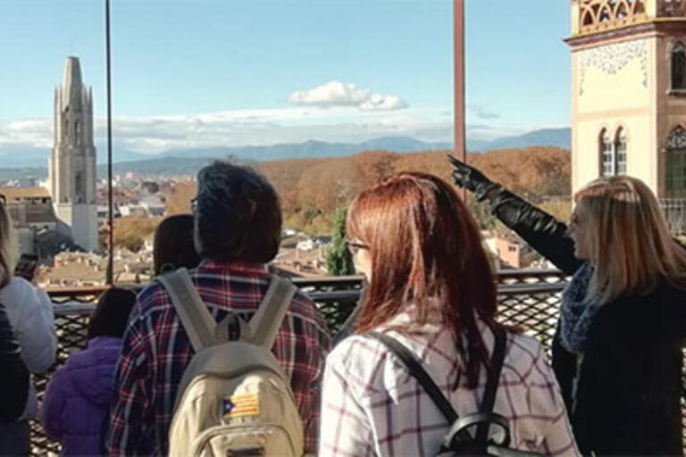

Visita · Girona
La millor manera de descobrir tots els racons i curiositats d'un indret és a través de persones que hi viuen, el coneixen en profunditat, tenen la formació adient i són capaces de transmetre…